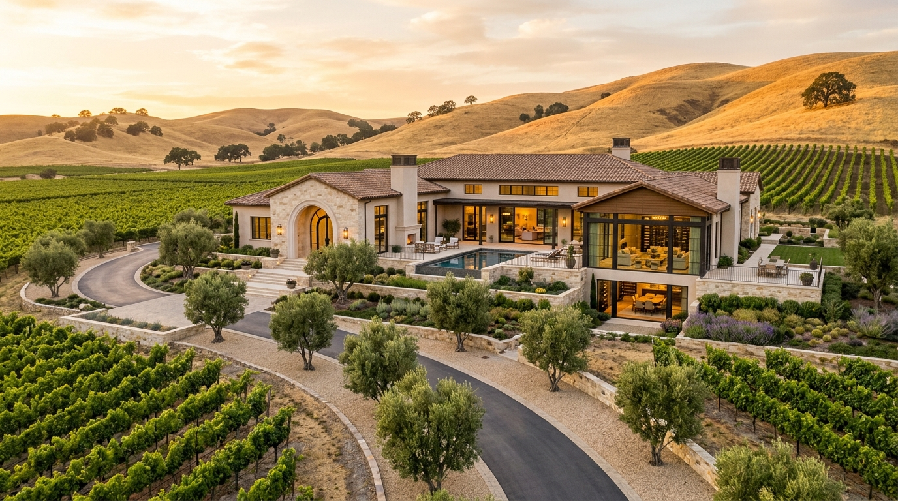
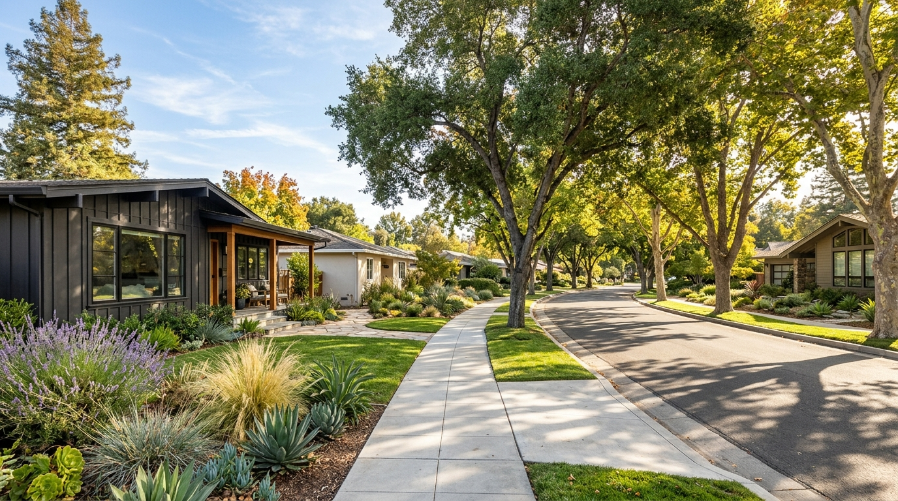
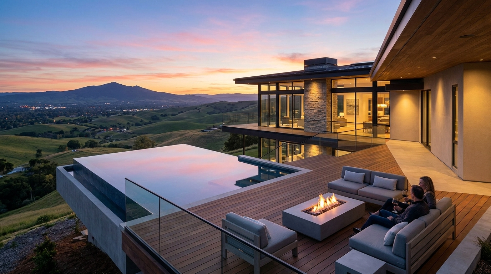
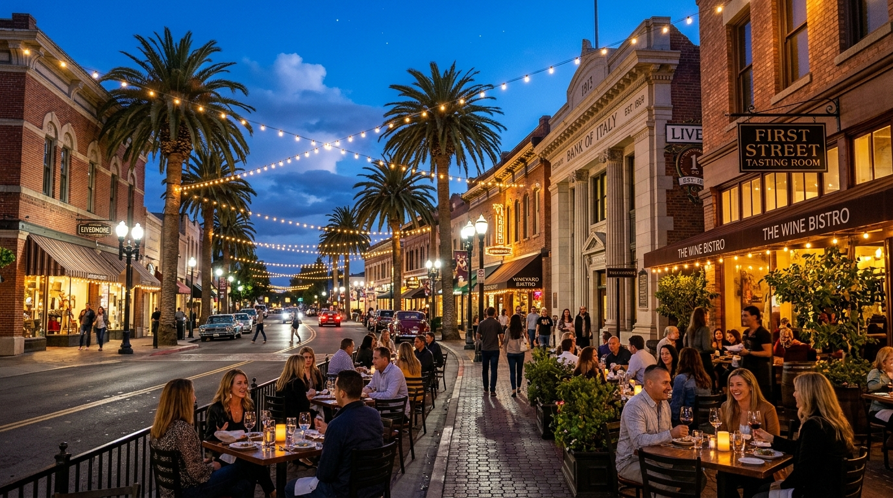

HISTORIC VINEYARDS, EXPANSIVE ACREAGE & NATIONAL LABORATORY SCIENCE
California’s oldest wine region combines deep agricultural roots with national laboratory science and research. Boasting over 50 historic boutique wineries, expansive open spaces, a thriving downtown arts district, and generous residential lot sizes, Livermore offers exceptional lifestyle value across the Tri-Valley basin.
Rolling vineyards, 50+ award-winning wineries, vibrant downtown dining, and a highly educated community anchored by Lawrence Livermore National Lab.
Weekend tastings at Wente and Concannon, summer concerts on First Street, cycling scenic Arroyo Road, and stargazing under clear valley skies.
Lake Del Valle offers boating, fishing, and camping, while Sycamore Grove Park features 847 acres of tranquil nature paths and oak savannas.
Custom vineyard estates on 1-to-5 acre parcels in South Livermore, equestrian properties, and modern suburban family enclaves.
The relaxed pace and rustic romance of Napa and Sonoma, combined with modern Bay Area career access and top schools.
Livermore schools emphasize innovative STEM and biotechnology pathways in partnership with Lawrence Livermore National Laboratory and Sandia National Laboratories.
Prestigious International Baccalaureate (IB) World School offering advanced biotechnology pathways, robotics, and championship athletics.
Historic secondary school founded in 1891, featuring a state-of-the-art STEM center, agricultural sciences, and celebrated music programs.

Custom acreage properties, private vineyards, and equestrian ranches surrounding Wente and Concannon vineyards.

Beloved mid-century and traditional residences near Granada High School, offering spacious yards and quiet tree-lined avenues.

Elevated foothill homes with panoramic valley views, modern architectural updates, and rapid access to Altamont and Vasco corridors.

Walkable enclave near First Street restaurants, Bankhead Theater, Livermore Cinema, and Las Positas College.
Off-market opportunities and upcoming listings in Livermore are available via Compass Private Exclusives. Connect directly with Steven for discreet access and current market inventory.